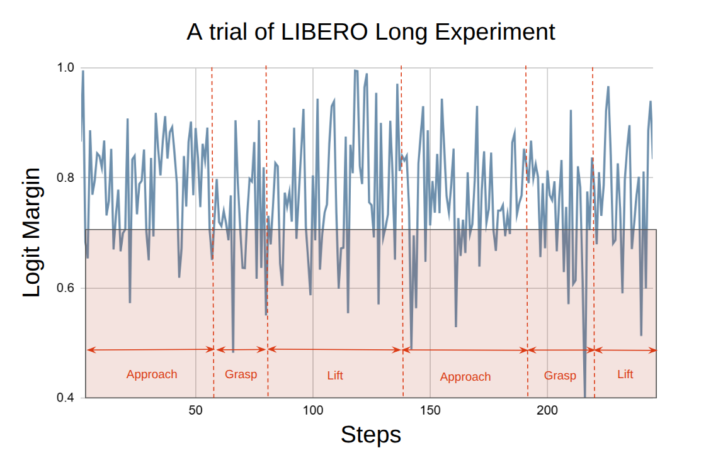

用一个几乎零成本的解码期信号（动作 token 的 top-1/top-2 概率差）当作「模型自己有多确定」的代理，不确定就把整份 KV 作废、全量重算。拿到的是：在缓存本来会拖后腿的任务上把失分收回来，且不需要训练。付出的是失效步的算力尖峰与一个必须按模型标定的阈值。
- 最小可复用件
- 「margin 计算 + 布尔门控」不到 20 行：读完上一步动作 logits 算
mean(p1−p2)，低于阈值就跳过缓存路径。可直接套在 VLA-Cache 或任何「上一帧 KV 复用」实现外面。 - 主要风险
- margin 与输出校准绑定，换 checkpoint 要重标阈值；门控抖动会让逐步算力与延迟二值跳变；flow / diffusion 动作头没有 logit，方法原则上不适用。
- 复现门槛
- 免训练、免改权重、不增参数与显存，只需能拿到动作解码的 logits。论文在单张 A100 上完成全部实验，未给真实机器人结果。
1 核心摘要
问题。VLA-Cache 这类跨控制步复用，判断「哪些视觉 token 的 K/V 能沿用」时只看观测空间：patch 余弦相似度、text-to-vision 注意力、层注意力熵。三者回答的都是「输入看起来变了没有」，不是「模型还拿不拿得准」。画面几乎不动、任务却进入关键决策（抓取对准、子任务切换）时，陈旧表征会被喂进自回归解码，错误沿时间累积。
做法。作者在 VLA-Cache 外面加了一个标量门控。第 t−1 步解码出 D 个动作 token，每个动作维都有一份覆盖全词表的 softmax；取最高与次高概率之差、对 D 维求均值得到 margin mt−1。第 t 步前与阈值 θm 比较：低于阈值就作废整份 KV cache，对 N+|ℓ| 个 token 全量前向；高于阈值照常走三段复用。阈值按架构标定一次——OpenVLA 取 0.65，OpenVLA-OFT 取 0.50，在 LIBERO-Spatial 上粗网格搜出后跨四个 suite 固定。
判定。机制里没有新组件，价值在选对了信号：margin 只在两个候选动作真的互相竞争时塌下去，长尾词表噪声与 attention sink 都污染不到它。代价是失效整帧全量、粒度最粗，信号来自上一步，天然滞后一个控制周期。一句话：选择器一个字节都没改，只在它前面加了一个开关。
2 复用机制定位
它命中的是失效判定：不改「谁可以复用」，只改「这一帧还允不允许复用」。判定失效即退化为全量前向，缓存粒度与层级预算都不动，门控关闭时完全继承 VLA-Cache 的策略，所以是部分命中。
| 维度 | Gated VLA-Cache 的做法 |
|---|---|
| 判定信号 | 上一步动作解码的 top-1/top-2 概率 margin 在 D 个动作维上的均值，与 θm 比较。信号在输出端，不在图像端。 |
| 复用单位 | 不变：视觉 patch token 的 K/V（p=14，N=256 对应 224×224）。门控只输出布尔量，不挑 token。 |
| 失效与重算 | 整体失效：清空整份 cache，N+|ℓ| 全量前向，重建所有层、所有 token 的 K/V。无局部失效变体。 |
| 层级预算 | 关闭时沿用 VLA-Cache 的每层复用比例；门控本身不含层信息。 |
| 在线性 | 因果，只用第 t−1 步已解码的 logits；不增前向、参数、显存，不需训练。但每步算力二值，延迟双峰。 |
margin 是解码之后才有的量，决策却在下一次 prefill 之前——只能事后评判，不能事前预测。
3 问题与动机
三段判定共享一个前提：视觉变化程度可以代理「模型此刻需不需要新信息」。抓取对准时，夹爪与物体的相对位姿变化可能只落在几十个像素上，整图相似度（τ=0.996）依然很高，而被判为静态的区域恰恰决定成败；text-to-vision 注意力是在混用陈旧 K/V 的上下文里算出来的，拿它给缓存做体检有自证嫌疑（本页分析）；层熵调的是「算多少」，不回答「该不该算」。作者的说法是：这些量测「看起来变了没有」，要问「模型还有没有把握」，二者在平稳帧上同向，关键帧上分叉。
本文的假设是：缓存让模型失去判别力时，最先体现在 top-1 与 top-2 的概率差收窄，而不是画面差异。所以像素没变也该整帧重算。
被否掉的替代信号也值得记：动作分布熵被 32,000 词表的长尾淹没；注意力熵被 attention sink 按住，几乎恒定；相邻步动作差有信号但语义错位，测的是「在做什么」而非「有多确定」。判据由此清晰：信号要落在决策瓶颈，不能被长尾或 sink 稀释。
4 方法拆解
4.1 信号：margin 是什么、在哪一步取
第 t−1 步解码出动作 token 序列，每个动作维 d 都有一份覆盖全词表的 softmax，记最高与次高概率为 p1、p2：
mt−1 = (1/D) · Σd=1..D [ p1(adt−1) − p2(adt−1) ]
三点复现要点：取全部动作维求均值，不是只看首个 token（论文未给 D 的具体取值）；取概率差而非 logit 差，先 softmax 再减，值域 [0,1]，0.65 才等于「首选比次选高 65 个百分点」；取上一步，原文承认 one-step reactive lag。

Figure 2：VLA-Cache 的三段复用流水线（Static Patch Detection → Task Related Token → Entropy-Adaptive Layer）与新增的 Neural Introspection Gate，门控比较 margin 与 θm 后选择 Cache Reuse 或 Full Compute。
4.2 门控开关与整帧失效
m ← mean(p1 − p2) over D dims # 复用上一步解码的 logitsif m < θm: invalidate entire KV cache; full forward over N + |ℓ|else: static patch → task-relevant filter → layer-wise reuse partial forward over non-cached tokensdecode a_t; return a_t, cache
失效粒度是整帧全量：不挑 patch、不挑层，也不回滚到更早的缓存。好处是干净——它不会比不复用更差，最坏只是白算一次，作者原话是「失效总是安全的，只是偶尔浪费」。代价是算力只有两档，延迟呈双峰。
4.3 阈值与免训练
阈值不自适应：在 LIBERO-Spatial 上网格搜索取最优，再跨四个 suite 固定；两架构不同（0.65 / 0.50）是因为动作头形式与输出校准尺度不同。没有在线自适应——工程含义是换模型要重标，换任务不用。
免训练的含义很具体：不加参数、损失与权重改动，模型完全冻结，逻辑全在推理侧，只依赖已有的 forward 输出。因此可叠在任何「解码期拿得到动作 logits」的自回归 VLA 上，也可叠在任何跨帧复用 KV 的实现上。在线边界三条：因果、只多存一个标量、单步算力二值跳变。
5 证据与实验
| 项目 | 内容 |
|---|---|
| 模型 | OpenVLA（7B）；OpenVLA-OFT（并行动作维解码），官方权重 |
| 基准 | LIBERO 四个 suite，每 suite 10 任务 × 50 episodes |
| 指标 | 成功率 SR；TFLOPs/step（未报延迟与显存） |
| 硬件 | 单张 A100，全部仿真 |
| 对照 | Full Inference；VLA-Cache（τ=0.996、top-k=120），同环境自测 |
| 每步算力 | 缓存路径 1.43 或全量路径 1.87 TFLOPs，两档、无中间态 |
| Suite | Full SR / TFLOPs | VLA-Cache SR / TFLOPs | Gated SR / TFLOPs |
|---|---|---|---|
| OpenVLA | |||
| Spatial | 78.8 / 1.89 | 78.8 / 1.43 | 79.4 / 1.55 |
| Object | 70.4 / 1.86 | 69.4 / 1.44 | 67.8 / 1.54 |
| Goal | 77.2 / 1.83 | 74.0 / 1.40 | 77.4 / 1.50 |
| Long | 54.0 / 1.88 | 50.2 / 1.43 | 54.8 / 1.54 |
| 平均 | 70.1 / 1.87 | 68.1 / 1.43 | 69.9 / 1.53 |
| OpenVLA-OFT | |||
| Spatial | 93.8 / 4.00 | 93.8 / 3.11 | 94.0 / 3.23 |
| Object | 98.4 / 3.96 | 98.6 / 3.05 | 98.6 / 3.08 |
| Goal | 97.2 / 3.94 | 96.8 / 3.06 | 97.0 / 3.07 |
| Long | 93.8 / 3.98 | 94.0 / 3.05 | 93.0 / 3.13 |
| 平均 | 95.8 / 3.97 | 95.8 / 3.07 | 95.7 / 3.13 |
读表提醒：这里的 Full 70.1% 是本文在 A100 上的同环境自测值，VLA-Cache 原文自报的 LIBERO 平均是 75.0%（RTX 4090 测得），两者评测协议是否一致论文未交代，不要跨页面横比；表内三个数字同环境，可以比。TFLOPs 也不等同于其原文的 CUDA latency。
Goal 与 Long 是主论据。VLA-Cache 在 Goal 掉 3.2 点（77.2→74.0），门控后 77.4；Long 掉 3.8 点（54.0→50.2），门控后 54.8，比全量还高 0.8，作者归因于「选择性复用的时间平滑」，属推测、无分离实验。所谓「回收超过 100%」是相对表内 VLA-Cache 的损失算的：Goal 106%（(77.4−74.0)/(77.2−74.0)），Long 121%，分子含「超过 Full」的部分才会大于 100%。但两个分母只有 3 个多点，500 episodes 的粒度是 0.2 点，超出部分落在噪声量级，不宜当成「超过全量推理」的结论。
Object 是明确反例。该 suite 上缓存只掉 1.0 点，门控后 67.8 反而低于两个基线，作者归因于多余的失效打断了短时程任务的时间平滑。门控不是单调增益：缓存本来就安全的地方，它是纯成本。
OFT 上门控基本沉默。VLA-Cache 任一 suite 最多掉 0.4 点，三者平均 95.7 / 95.8 / 95.8，门控只多花 0.06 TFLOPs——margin 一直很高，几乎不触发。换句话说，全文的正面结论主要建立在较老的 OpenVLA 上。
触发率。LIBERO-Long 平均约 24% 的步骤触发失效，简单任务低于 10%，且集中在抓取对准与子任务切换。

Figure 5：LIBERO-Long 单 episode 的 top-1/top-2 logit margin 曲线，粉色区间为门控触发、缓存失效后全量重算的时段，红色虚线按 Approach / Grasp / Lift 切分两个抓放周期。
阈值敏感性。θm 在 0.55–0.75（OpenVLA）与 0.40–0.60（OFT）之间扫，成功率分别落在 78.2%–79.4% 与 93.2%–94.0%。两端各有出口：阈值趋 0 退化为 VLA-Cache，过高则频繁失效、打断时间平滑。
代价口径。平均 69.9% @ 1.53 TFLOPs，比全量低 0.2 点、省 18% 算力；相对 VLA-Cache 多花 0.10 TFLOPs 换回 1.8 点。摘要说的「80% 计算节省」按 (1.87−1.53)/(1.87−1.43) 算实为 77%。未报告：延迟分布、显存、控制频率、真实机器人、失败案例。
6 优点、局限与 VLA 适配
可迁移
1. 失效判定与选择器解耦。门控只消费最终 logits、只输出一个布尔量，可直接包在任何跨帧复用实现外面，包括 token 剪枝、层跳过与跨 episode 的 KV 检索。
2. 信号选择的三关。动作熵、注意力熵、动作增量三组否定实验给出判据：信号要落在决策瓶颈，不能被长尾词表稀释，也不能被 attention sink 按住。
3. 失效方向单调安全。失效等于全量，调参失误最坏只浪费算力，不会比不复用更差，可以先上线再调阈值。
不成立的前提
1. 动作必须被离散成 token。flow / diffusion 动作头（π0、SmolVLA 一类）没有这份 softmax，原则上不适用；论文只测了两种自回归架构，却把结论写成「可接入任何自回归 VLA 推理栈」。
2. 高 margin 等于缓存可信。margin 只反映输出分布有多尖，不反映 K/V 是否陈旧——「自信地错」同样不触发；作者承认无法区分缓存不确定与固有模糊，但未给误判率。
3. 模糊性在相邻步持续。用 t−1 的 margin 决定 t 的缓存，10–20 Hz 下通常成立，但抓住、碰撞这类快速相位切换会漏拍；阈值附近的抖动还会让动作在「平滑版」与「新鲜版」之间跳，闭环效应未评估。
6.1 延迟：双峰而不是斜坡
单步算力只有两档，论文只给平均 TFLOPs。最坏情况是连续多步 margin 都低于阈值（模棱两可的接触阶段），系统连续走全量，节省归零且抖动最大。所以要把触发率当一等指标，而不只看平均 TFLOPs。
6.2 最小改造方案
本页建议的最小改造（属本页分析，论文未实现）：(1) 解码后缓存 m 与触发标志，下一步 prefill 前读取，不动模型；(2) 加迟滞与冷却——进入用 θlow、退出用 θhigh，触发后 k 步内不再触发，把二值抖变压成有界频率；(3) 对没有 logits 的 flow head，用多次采样速度场的分歧度作替代信号——同构思路，未经验证。
7 落地清单
- 打通 logits 出口。在动作解码处取每个动作维的 top-2 softmax 概率，算
mean(p1−p2)并落盘为逐 step 标量。验收：不改权重、不增前向、不增显存。 - 标定
θm。目标模型 + 一个中等难度 suite 跑 50–100 episodes 粗网格（OpenVLA 参考 0.55–0.75，OFT 参考 0.40–0.60），取平台中点而非峰值。验收：阈值 ±0.05 内成功率波动小于 1 个点。 - 把触发率当一等指标。分简单/困难任务统计触发率（参考 <10% 与 ~24%），并记录触发步、非触发步各自的 p50/p99 步时。验收：p99 不超过控制周期的 1.2 倍，否则加冷却步数。
- 门控粒度先做整帧。别做「只重算高熵层」这类局部失效——论文没有该变体，也没有消融。
- 双指标验收并盯反例。目标是回收 ≥80% 的精度损失、同时保留 ≥70% 的计算节省，两者必须同环境自测。上线前确认任务分布更接近 Goal/Long 还是 Object——短时程、缓存本就安全的任务上门控是纯成本（原文 Object −1.6）。
来源：Zhijie Wu, Kento Kawaharazuka, Kei Okada, "Neural Introspection Gating for Adaptive KV-Cache Reuse in Vision-Language-Action Models", arXiv:2608.10824v1, 2026；数字取自 Table I（OpenVLA）、Table II（OpenVLA-OFT）、第 V-E 节（触发率）、第 V-F 节与 Fig. 6/7（阈值敏感性）、第 VI 节（替代信号与局限）。VLA-Cache 基线数字均取自本文同环境复现值，非其原文自报值。
相关页面：VLA-Cache · 跨控制步 KV 复用 · LAC · 可学习复用策略 · 返回专题二